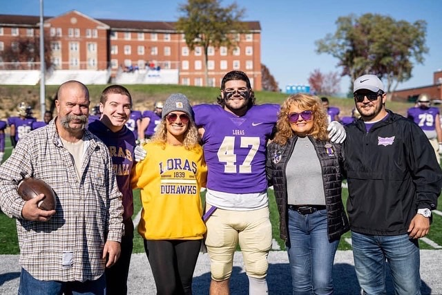

about

My name is Luke Emery McWilliams. I was born on January 2, 2003. I am currently living in Wilmington, Illinois and going to school at Illinois State University in Normal, Illinois. I am the youngest of 3 brothers and 1 sister. Some of my main things i do in my everyday life is gaming, hanging out and going out with friends, and watching movies and tv shows. My favorite show currently is "Stranger Things" and one of my favorite movies of all time is "Deadpool" (Its hard to choose a favorite movie because I have seen and loved alot of them). I'm going to School for Game Design as my major because video games have made an impact on my life. I have made so many good memories playing and I have made some best friends over it. My life goal is to end up working for Treyarch Studios, which one of the development studios behind my favorite games (Call of Duty).